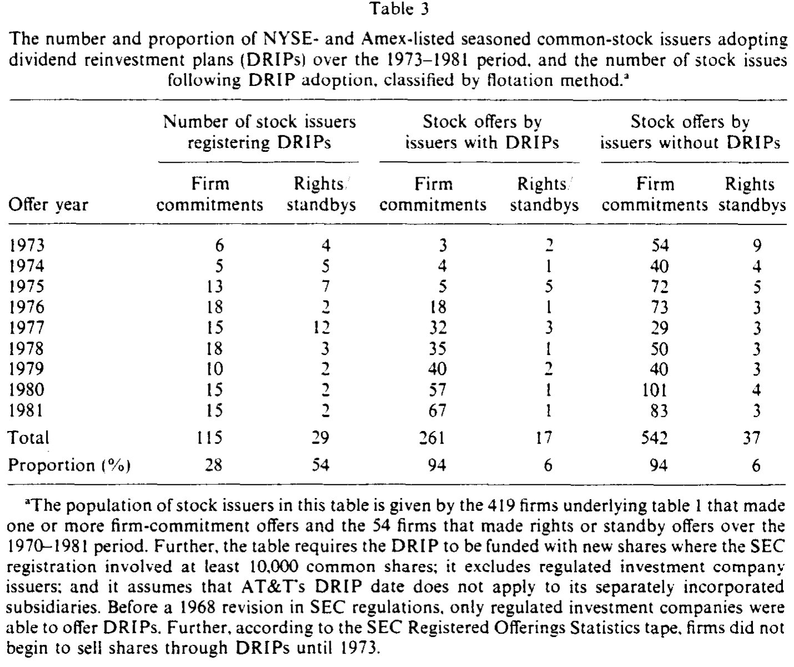
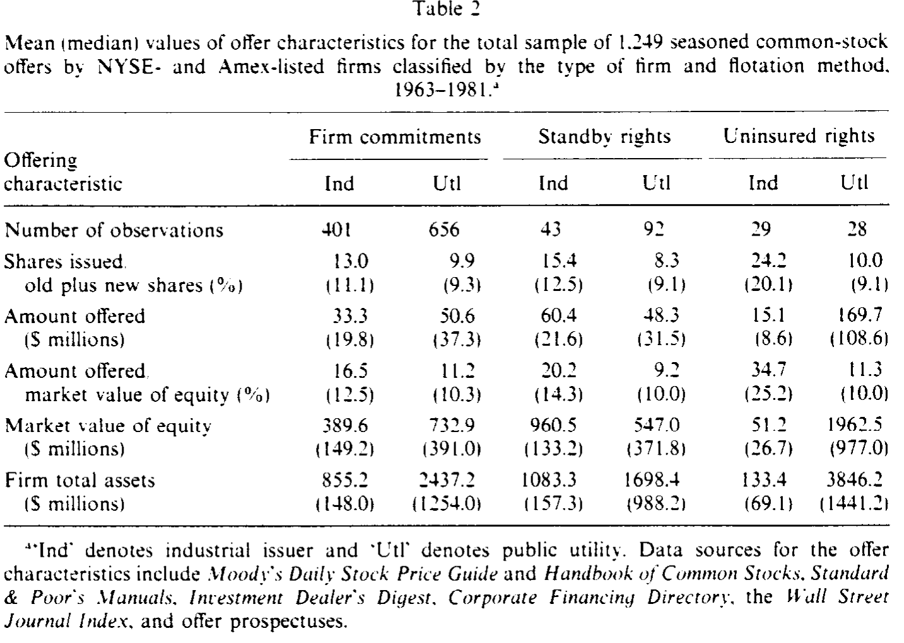
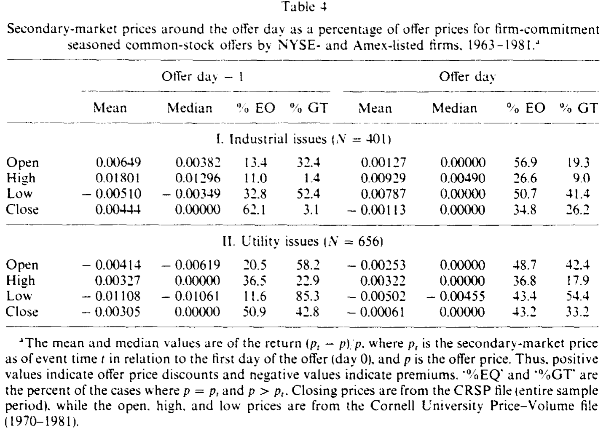
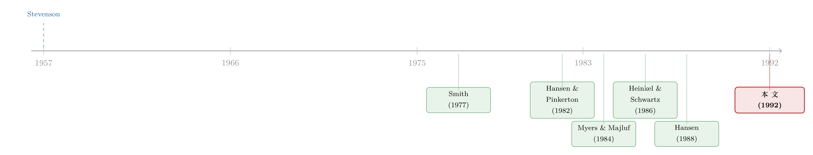

便宜的方法没人用：一桩「配股悖论」与它背后的逆向选择
本文读的是 Eckbo & Masulis (1992, Journal of Financial Economics)：明明 配股 (rights offer) 的直接发行成本远低于 承销发行 (underwritten offer)，美国上市公司却几乎全都选了更贵的承销。作者把 Myers–Majluf 的逆向选择机制搬进发行方式的选择，提出一个核心洞见——老股东的认购意愿 (takeup) 和承销商的认证 (certification) 是两种互为替代的「防逆向选择」装置；当老股东不肯接盘时，无承销配股反而会被逆向选择拖垮。这一框架同时解释了发行频率、认购预承诺、以及不同方式下迥异的公告效应。
1 一个便宜货为什么没人买
先讲一个让金融学者们尴尬了十几年的事实。
一家上市公司要增发新股，手上有三条路。第一条叫 无承销配股 (uninsured rights)：公司给现有股东每人发一张短期认股权证，按持股比例打折认购新股，卖不卖、认不认，悉听尊便。第二条叫 备兑配股 (standby rights)：还是先发给老股东，但额外请一个承销商「兜底」，老股东没认购的那部分，承销商照单全收。第三条叫 firm-commitment underwriting（firm commitment，可直译为「全额包销」）：公司干脆把整批新股一次性卖给承销商，由它去公开市场转售。
Smith (1977) 当年算了一笔账，结论很刺眼：配股的平均直接发行成本，比承销发行低得多。不仅如此，配股的成功几乎是可以「保证」的——只要把认购价 (subscription price) 的折扣调得足够大，认股权的价值就足够高，老股东总会去行权。既便宜又稳妥。
那么问题来了：既然配股又便宜又保险，为什么美国公司不用它？
不是「少用」，是几乎「不用」。Eckbo & Masulis 给出的数字触目惊心：在 1963–1981 这段时间，纽交所和美交所的工业类上市公司里，用配股方式发行的股票占比不到 5%，到 1981 年这类发行人几乎彻底消失。这就是 Smith 点破、后被称为 「配股悖论」(rights offer paradox) 的东西:理性的公司，集体放着便宜的方法不用，偏要去买贵的。
这事还不只发生在股票上。Eckbo (1986) 发现公司债也一样——1964–1981 年间用配股方式发行的债券同样不到 5%。而隔壁加拿大、欧洲、太平洋沿岸国家，配股却是主流。同一种工具，跨过一条国境线，命运截然相反。
2 旧账本上的几种解释，为什么都不够
面对悖论，最省事的解释是「代理问题」。Smith 本人就提过几种可能:经理人能从承销商那里拿到私人好处；董事会里坐着投资银行家（Herman (1981) 发现 200 家最大非金融公司里有 21% 的董事会里有投行家），存在利益冲突；又或者，承销发行能把股票卖给分散的公众，稀释股东、削弱监督，从而让经理人活得更舒服。
接着，一个自然的反驳是:这些解释都暗示公司在「损害股东利益」，可如果配股真的全方位占优，损失大到这个地步，市场和股东不会无动于衷十几年。
于是有人换了个思路:也许配股有些被忽略或低估的「股东自己要承担的成本」。比如资本利得税 [Smith (1977)]、在二级市场卖掉认股权的交易成本 [Hansen (1988)]、以及可转债与认股权证里反稀释条款 (antidilution clauses) 带来的财富转移。Hansen & Pinkerton (1981, 1982) 更进一步:他们认为配股表面上的成本优势其实是 选择性偏误 (selection bias)——用配股的公司，本来股权结构就更集中（往往有一个愿意兜底认购的大股东），是这些公司特征压低了成本，而不是配股这种方式本身便宜。
这个批评很关键，因为它指出:单变量的成本比较根本不可信，必须放进一个能控制发行人特征差异的多元框架里重做。
但真正麻烦的是，Eckbo & Masulis 自己先做了这件事。他们用 多元回归 (multivariate regression) 控制住了可能的选择偏误，结果——悖论非但没消失，反而被更强地证实了。配股的成本优势是真的，不是统计假象。
这下，所有「成本其实没那么低」的解释都失了脚。悖论还在那里，而且更结实了。
3 把 Myers–Majluf 搬进发行方式的选择
那真正关键的一步在哪里？
Eckbo & Masulis 的回答是:之前所有人都在「成本」这条线上找答案，但发行方式的选择，本质上是一个 信息不对称 (information asymmetry) 下的问题。他们把 Myers & Majluf (1984) 的逆向选择机制请了进来。
回忆一下 Myers–Majluf 的经典故事:经理人比外部投资者更清楚公司值多少钱。当公司直接向不知情的外部投资者卖新股时，理性的投资者会想——「你急着卖股票给我，多半是因为你自己知道股价被高估了」。于是投资者压价，于是被低估的好公司不愿发行，于是发行这个行为本身就是个坏消息，股价应声而跌。（关于增发为什么不总是坏消息的另一面，可参见《新股增发，凭什么不一定是坏消息？》。）
这套逻辑原本是为「直接卖给外人」设计的。Eckbo & Masulis 做了两处关键扩展，正好对上三种发行方式:
第一，允许老股东参与认购。 如果新股不是卖给外人，而是被现有股东（他们和经理人一样「知情」，或至少利益一致）买走，那么前面那条「贱卖给傻钱」的逻辑就断了。老股东的认购比例越高，逆向选择造成的财富转移就越小。 这就是 认购意愿 (takeup) 的角色。
第二，给承销商一个信息上的角色。 一个声誉良好的承销商，通过尽职调查和把声誉押上去，相当于替这只股票做了 认证 (certification)，告诉外部投资者「这不是一只柠檬」。这就压低了卖给外人时的逆向选择折价。
到这里，全文的那一个核心洞见浮出水面:
老股东认购 (takeup) 和承销商认证 (certification)，是两种互为替代的、用来压制逆向选择财富转移的装置。 一家公司选哪种发行方式，取决于它更容易调用哪一种装置。
这一下子就把碎成一地的事实串成了一条线:
- 如果公司股权集中、老股东愿意且有能力大比例认购（takeup 高），它就可以用无承销配股——既省下承销费，又因为股票被自己人接走而不触发逆向选择。
- 如果老股东接盘能力有限，但又不想承受全额承销的逆向选择折价，就用备兑配股——先让老股东认一部分，剩下的让承销商兜底兼认证。
- 如果老股东根本指望不上（股权高度分散的大公司就是这样），那就只能依赖承销商的认证，用全额包销。
而美国的上市公司，恰恰是全世界股权最分散、规模最大的那一批——老股东这条路本来就走不通。于是它们「被迫」走向承销。悖论的反转就在这里:美国公司不用便宜的配股，不是因为非理性，而是因为它们恰好缺少让配股不被逆向选择拖垮的那个条件——可靠的老股东接盘。
4 模型:把选择写成一个权衡
虽然原文的形式化推导较长，这里把他们框架的内核抽出来，写成一个发行人的选择问题，便于看清机制（符号为示意，逻辑严格对应正文的语言描述）。
设公司要在三种方式 \(m \in \{UR, SB, FC\}\)（无承销配股 / 备兑配股 / 全额包销）之间选择，目标是最大化对现有股东的净发行收益:
这个式子把全部张力压进了两项的拉锯里。
首先看 \(C(m)\)。 这是 Smith 当年盯着看的那一项:直接成本。无承销配股最省，全额包销最贵。如果世界上只有这一项，那答案永远是配股——这正是悖论的来源。
接着，关键的第二项 \(W(m;\alpha,q)\) 进场。 这是被前人忽略的逆向选择财富转移。它的性质是:
$$ \frac{\partial W}{\partial \alpha} < 0, \qquad \frac{\partial W}{\partial q} < 0. $$
也就是说，老股东认购比例 \(\alpha\) 越高，财富转移越小；承销商认证质量 \(q\) 越高，财富转移也越小。takeup 和 certification 在压低 \(W\) 这件事上是替代品——这正是上一节那句核心洞见的数学表达。
然后，真正卡住美国公司的是那个外生约束 \(\alpha \le \bar{\alpha}\)。 对股权高度分散的大公司，\(\bar{\alpha}\) 很低——老股东想接也接不动那么多新股。于是无承销配股的 \(W(UR;\alpha,q)\) 居高不下:省下的 \(C\) 还不够赔上逆向选择的窟窿。这时候，哪怕 \(C(FC)\) 更贵，全额包销靠着承销商的认证把 \(W\) 压下去，反而让现有股东的净收益 \(B(FC)\) 更高。
于是反转出现了:在低 \(\bar\alpha\) 的世界里，「贵」的全额包销才是对股东最优的选择。 悖论不再是悖论。
值得强调的是，这个框架里 takeup 不是事后被动观察到的结果，而是发行人事前就要考虑的约束。这也解释了为什么无承销配股几乎总伴随着大额的 认购预承诺 (subscription precommitment)——发行人需要事先「锁定」足够高的 \(\alpha\)，才敢走配股这条路；而备兑配股因为有承销商兜底，反而不需要这种预承诺。
5 一个意外的旁证:股利再投资计划
模型的逻辑还在另一个地方留下了指纹。
如果配股的本质是「向现有股东要钱」，那么有没有别的工具，也在悄悄替代这件事？有——股利再投资计划 (dividend reinvestment plans, DRIPs)。DRIP 允许股东用本该拿到的现金股利（外加一部分额外现金）按市价折扣（样本后期通常 3–5%）认购新股。这本质上就是一个周期性的、认购水平相对可预测的「迷你配股」。
于是一个可检验的推论自然冒出来:配股发行人应该比承销发行人更爱采用 DRIP。
数据正好对上。如表 3 所示，1973–1981 年间，54% 的配股/备兑发行人采用了 DRIP，而全额包销发行人只有 28%。更妙的是时间线:配股的消失，恰好和 DRIP 的普及同步发生。这暗示 DRIP 部分地「接管」了配股原本承担的功能——从现有股东那里筹资。

Table 3
当然，作者也诚实地指出，DRIP 的增长加上配股的萎缩，规模上并不足以完全解释悖论;它只是这条逻辑链上的一个旁证，而非主因。
6 数据与几个值得记住的数字
样本是这套故事的底气所在。作者几乎收齐了整个总体:1963–1981 年间纽交所与美交所上市的工业与公用事业公司的 1,249 笔增发，其中 1,057 笔全额包销、135 笔备兑配股、57 笔无承销配股（后两类共 192 笔，作者称这几乎是该期间国内配股的全部）。数据来自《华尔街日报索引》、Investment Dealer's Digest、Moody's 系列手册、CRSP、以及 SEC 的 ROS 磁带等。
发行特征上有个细节很能说明问题:如表 2 所示，在无承销配股这一类里，工业发行人规模最小（市值中位数仅 2670 万美元），却有着最大的相对发行规模（新股占老股比例最高）。这与模型一致——小而集中的公司，老股东接盘能力强，才用得起配股。

Table 2
至于「配股是否真的更便宜」，作者也顺手澄清了一个常被混淆的成本项:发行折价 (issue underpricing)。如表 4 所示，对典型的工业类全额包销发行，发行价相对前一日收盘价的平均折价仅 0.44%（中位数 0.00%），而且超过六成的样本里发行价恰好等于前一日收盘价。换句话说，承销发行的「折价成本」其实很小，悖论不能靠它来抹平。

Table 4
而模型最漂亮的一组预测，是关于公告效应的差异，这些预测都得到了大样本支持:
- 无承销配股的公告期平均异常收益不显著——因为股票被知情的老股东接走，没有触发逆向选择，市场不把它当坏消息。
- 备兑配股的公告效应显著为负，但负得比全额包销小——介于两者之间，正对应它「部分靠老股东、部分靠承销商」的混合性质。
- 全额包销的公告效应最负——纯粹依赖向外部投资者出售，逆向选择折价最重。
这条「按逆向选择强度排序」的公告效应阶梯，是整个框架最有力的实证落点。它还顺带解释了为什么全额包销（其次是备兑）往往在显著的股价上涨之后才宣布——经理人在股价高、信息不对称被市场暂时拉平的窗口里发行，而无承销配股之前则看不到这种 runup。
7 文献脉络
把这条线捋一遍，会发现它是一条「先发现反常、再反复围剿、最后用信息经济学收编」的典型路径。
最早是 Stevenson (1957) 记录下 1933–1955 年间约一半的美国大额股票发行还在用配股或备兑方式——那时配股还是常态。转折点是 Smith (1977)，他系统比较了配股与承销的直接成本，发现配股便宜得多，却被冷落，正式点出了「配股悖论」。

接着是一轮「成本侧」的围剿。Hansen & Pinkerton (1982) 用「选择偏误」来辩护，认为配股的成本优势是股权结构差异制造的假象；Hansen (1988) 则记录了备兑配股的同步衰落，把悖论扩展到第二种方式。与此同时，信息经济学的弹药库被打开:Myers & Majluf (1984) 的逆向选择模型成了所有后续工作的发动机；Heinkel & Schwartz (1986) 已经开始用非对称信息来比较配股与承销。Eckbo 自己在债券市场 [Eckbo (1986)] 也观察到了同样的悖论。
Eckbo & Masulis (1992) 站在这条线的汇合处:他们既用多元回归坐实了悖论（堵死成本侧的退路），又把 Myers–Majluf 扩展出 takeup 和 certification 两个新维度，用一个统一框架同时解释发行频率、认购预承诺与公告效应。这正是它至今被反复引用的原因。后来关于承销商认证的研究——比如增发场景下承销认证如何改变市场反应（可参见《承销商替你做了一道「卖出期权」的算术》）——都能在这篇论文的骨架上找到接口。
8 评论与延伸（Q&A + 研究方向）
(a) 几个可能的疑问
Q：这和 Myers–Majluf (1984) 到底差在哪？不就是套用吗？
差在两个被加进去的维度。Myers–Majluf 处理的是「直接卖给外人」这一种情形，结论是发行=坏消息。Eckbo & Masulis 让老股东可以参与认购（takeup），又让承销商扮演认证者（certification），于是同一套逆向选择逻辑下长出了三种发行方式和三档公告效应。换句话说，原模型是这篇论文的一个特例（takeup=0、无认证）。
Q：既然回归坐实了配股更便宜，凭什么说公司选承销是「理性」的？
因为「成本」只是净收益的一项。便宜的是直接成本 \(C\)，但无承销配股在老股东接盘能力低（\(\bar\alpha\) 小）时会触发巨大的逆向选择财富转移 \(W\)。对股权分散的大公司，省下的承销费抵不过这笔隐性转移，所以选贵的全额包销反而让现有股东更划算。理性体现在最大化净收益 \(B\)，而不是最小化账面费用。
Q：「老股东认购」和「承销商认证」凭什么是替代品，而不是互补品？
因为它们解决的是同一个问题——压低卖股票时的逆向选择折价。股票要么被知情的自己人买走（不需要外人相信它不是柠檬），要么由声誉承销商背书让外人敢买。两条路都能把 \(W\) 压下去，所以谁强用谁，呈替代关系。备兑配股恰好是两者的混合，公告效应也就落在中间，这是该框架最干净的内部一致性检验。
Q：DRIP 那一节是不是有点牵强？
作者自己也承认它不是主因。DRIP 在规模上不足以解释悖论的全部，但它提供了一个独立方向的旁证:如果配股的本质是「向现有股东周期性筹资」，那么功能相似的 DRIP 应当被配股型发行人更多采用——
54% vs 28%的对比和时间上的同步，正好印证了机制，而非充当主力证据。
Q：为什么无承销配股几乎总伴随大额认购预承诺，备兑却没有？
因为无承销配股没有承销商兜底，发行成败完全押在 takeup 上。发行人必须事前锁定足够高的 \(\alpha\)（往往靠大股东预承诺），否则一旦认购不足，逆向选择和发行失败风险都会爆发。备兑配股有承销商兜底剩余股份，\(\alpha\) 不足的风险被转移走了，自然不需要预承诺。这是模型对「认购约束」的一个直接、可观测的推论。
Q：这套美国故事，能解释加拿大、欧洲为什么偏爱配股吗？
能，而且是同一枚硬币的反面。那些市场上公司更小、股权更集中，\(\bar\alpha\) 高——老股东接盘能力强，配股的逆向选择成本低，于是便宜的配股就成了占优选择。悖论之所以是「美国式」悖论，正因为美国上市公司是全球股权最分散、规模最大的一批。
(b) 几个可能的研究问题与提案
1. 把 takeup–certification 替代关系搬到公司债与私募市场
【经济故事】Eckbo (1986) 已指出债券市场有同样的配股悖论。在信用市场里，「老债主续接」与「评级机构/承销商认证」是否也构成一对替代的防逆向选择装置？高收益债的私募 vs 公募选择，可能正是这对张力的体现。 【可行性】中。需要 Mergent FISD 的发行层数据 + 评级 + 持有人结构。识别上可借鉴本文的多元回归框架，但债券持有人「续接比例」的度量是难点，可能要用 NAIC/13F 拼接机构持有变化。
2. 外资持有人作为「认购意愿」的外生冲击
【经济故事】本文的核心约束是老股东接盘能力 \(\bar\alpha\)。如果一家公司的股东基础里突然涌入（或撤出）大量外资被动持有人，会不会改变它在配股与承销之间的选择？外资指数纳入事件提供了一个对股东结构的准外生冲击。 【可行性】中高。MSCI/FTSE 纳入与剔除是干净的事件，配合各国增发方式数据（许多国家配股仍是主流），可做 双重差分 (difference-in-differences, DiD)。难点是各国发行方式分类口径的统一。
3. 公告效应阶梯在高频数据下还成立吗？
【经济故事】本文的三档公告效应（无承销配股≈0、备兑略负、全额包销最负）是在日度数据上得到的。随着市场信息效率提升，这条「逆向选择阶梯」是否被压缩、甚至重排？这能检验 takeup–certification 机制是否随市场结构演变。 【可行性】高。现代增发样本充足，日内数据可得。可直接复制本文分类，比较不同年代的公告窗口异常收益，看阶梯是否稳定。
4. DRIP 与配股的替代关系再检验
【经济故事】本文用
54% vs 28%提示 DRIP 替代了配股的筹资功能，但样本止于 1981 年。回购、增发架空配售、ATM (at-the-market) 发行等新工具出现后，「向现有股东周期性筹资」这条暗线是否换了载体？ 【可行性】中。需要长时序的 DRIP 采用数据（较难获取）与发行方式数据拼接。识别偏描述性，但能更新一条经典证据链。
9 我的判断
这篇论文的贡献，不在于「又跑了一个回归」，而在于它把一个十几年解不开的悖论，从成本会计的死胡同里拽出来，放进了信息经济学的轨道。takeup 与 certification 互为替代这一个洞见，简洁得近乎优雅，却能一口气解释发行频率、认购预承诺、跨国差异、以及三档公告效应——一个框架打通这么多看似无关的事实，是真正高质量理论工作的标志。它也展示了一种值得学习的研究姿态:先用最严苛的多元方法把对手的退路（选择偏误）堵死，再亮出自己的解释。
对识别的担忧也是有的。其一，发行方式的选择是内生的:股权结构、信息不对称、公司规模同时决定了 \(\bar\alpha\) 和方式选择，回归里的相关性很难被解读成因果，作者更多是在做「与模型预测一致」的符合性检验，而非干净的因果识别。其二，样本里无承销配股只有 57 笔，工业类更少，统计功效有限，某些「不显著」的结论究竟是机制使然还是样本太小，难以完全分清。其三，takeup 和 certification 质量都是不可直接观测的潜变量，论文只能用可观测代理（股权集中度、承销商声誉）去逼近，留下了度量误差的空间。
后续我最想看到的，是把那个外生约束 \(\bar\alpha\) 真正「外生化」——用一个对股东结构的清晰冲击（外资指数纳入、税法变动、强制性持股规则）去推动 takeup，再看发行方式如何随之改变。那才能把这篇论文里漂亮的「符合性」证据，升级成真正的因果证据。
参考文献
Eckbo, B. Espen and Ronald W. Masulis (1992). Adverse selection and the rights offer paradox. Journal of Financial Economics 32(3), 293–332.
Eckbo, B. Espen (1986). Valuation effects of corporate debt offerings. Journal of Financial Economics 15(1–2), 119–151.
Hansen, Robert S. (1988). The demise of the rights issue. Review of Financial Studies 1(3), 289–309.
Hansen, Robert S. and John M. Pinkerton (1982). Direct equity financing: A resolution of a paradox. Journal of Finance 37(3), 651–665.
Heinkel, Robert and Eduardo S. Schwartz (1986). Rights versus underwritten offerings: An asymmetric information approach. Journal of Finance 41(1), 1–18.
Myers, Stewart C. and Nicholas S. Majluf (1984). Corporate financing and investment decisions when firms have information that investors do not have. Journal of Financial Economics 13(2), 187–221.
Smith, Clifford W. Jr. (1977). Alternative methods for raising capital: Rights versus underwritten offerings. Journal of Financial Economics 5(3), 273–307.
Stevenson, Harold W. (1957). Common stock financing. Michigan Business Reports No. 29. Bureau of Business Research, University of Michigan.